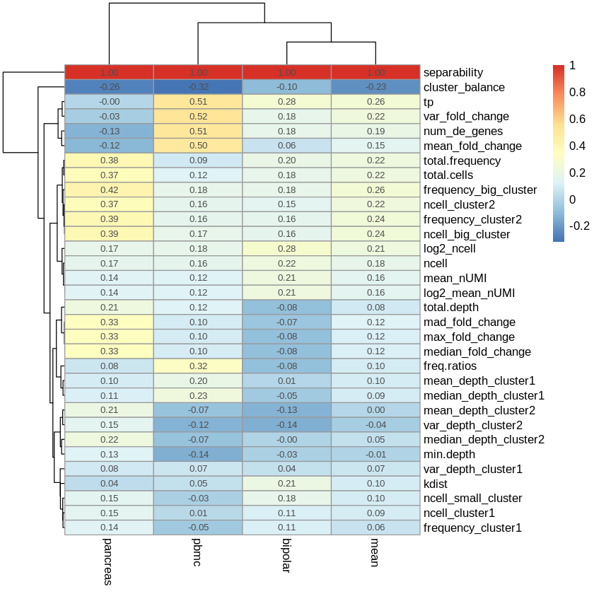
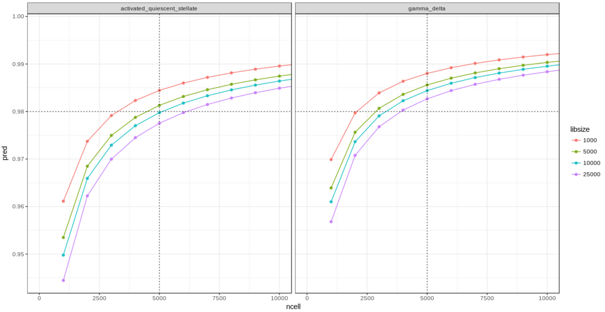
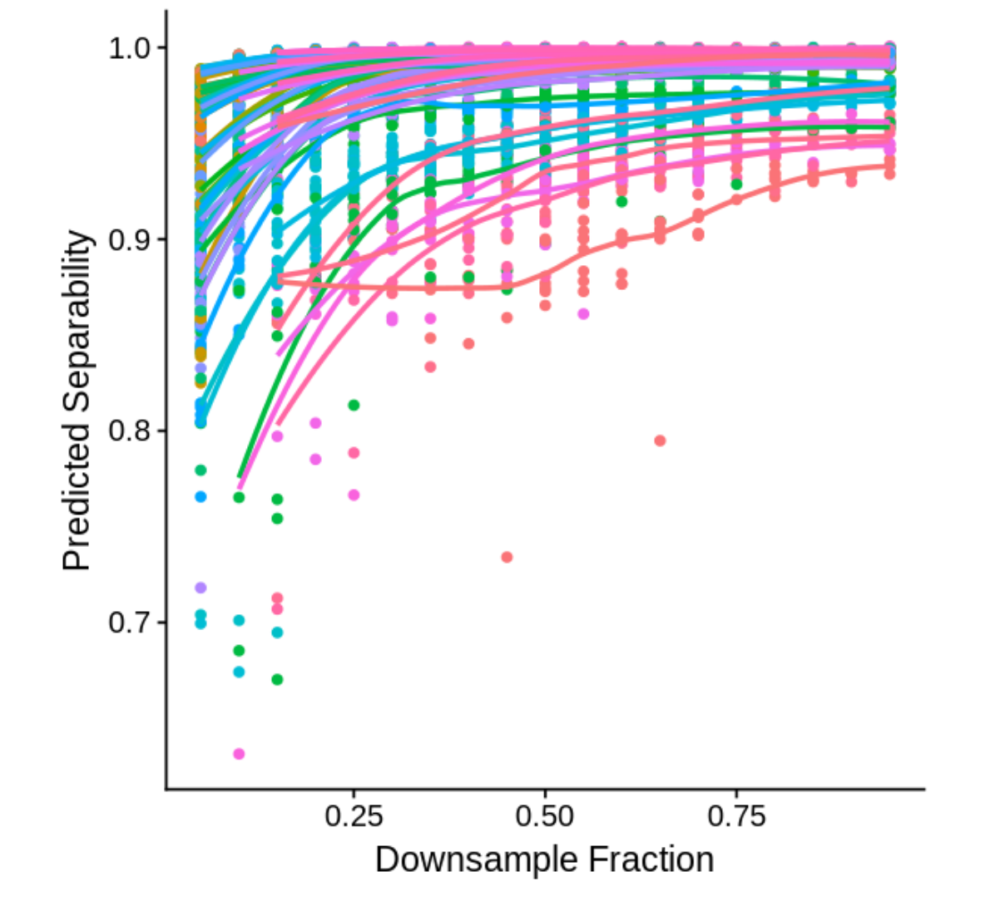
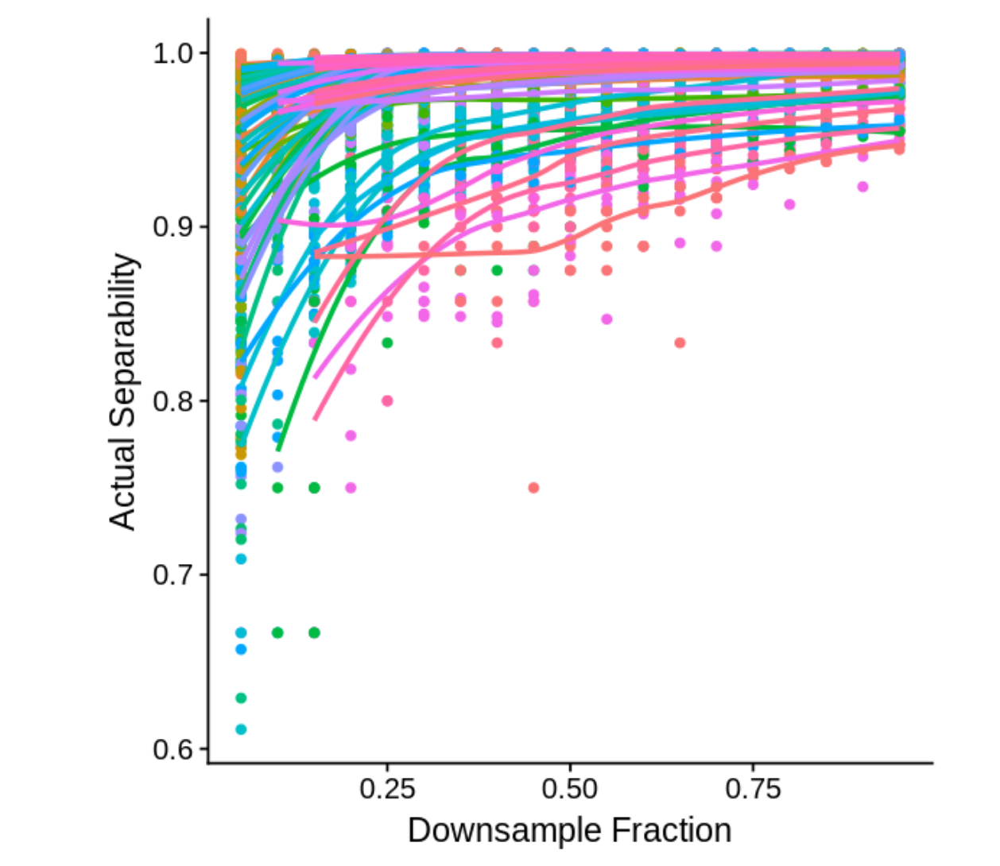
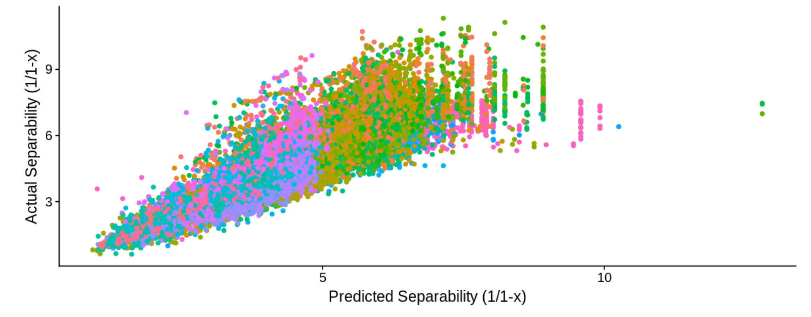

Task 1: How Many Cells?
Predicting separability of clusters
The Problem
A notion of separability: what percent of nearest neighbors are from the same cluster?
We want to predict the separability of two clusters as a function of the number of cells in the sample.
What factors matter and how can these be modeled?
Data sets
Three datasets: human pancreas, PBMCs, and retina datasets
Subsampled datasets (to model fewer cells and/or to model lower read depth)
Also vary relative frequencies of clusters
Predictive Features
- n_cell: Number of cells
- mean_nUMI: mean UMI across cells
- frequency_big_cluster:
- fraction of cells in the big cluster
- cluster_balance: #cells in small cluster / #cells in big cluster
- Num_de_genes: number of DE genes

Feature Selection with Boosted Trees
- Advantages of decision tree ensembles
- Nonlinear
- Heterogeneous features at different scales
- Feature importances are meaningful
- Estimate contribution to mutual information of {joint features} and separability
- Especially with a good model
- Boosted trees for lower variance, lower-entropy importances (or RFs)
- Forests of trees for gene set selection
- To get gene-level features for each pair of clusters (e.g. top DE gene)
- Run binary classifier on raw counts to tell apart the pair of clusters
- Output feature importances: fraction of cluster-discriminative interactions that each feature participates in
Model Application: Binomial

Model Performance: Boosted Trees
 
Model Performance: Boosted Trees

Future Directions
- Web Interface
- Future Experiments
- Overlap measures and cluster shapes
- Model asymptotics
- What are other metrics of separability?